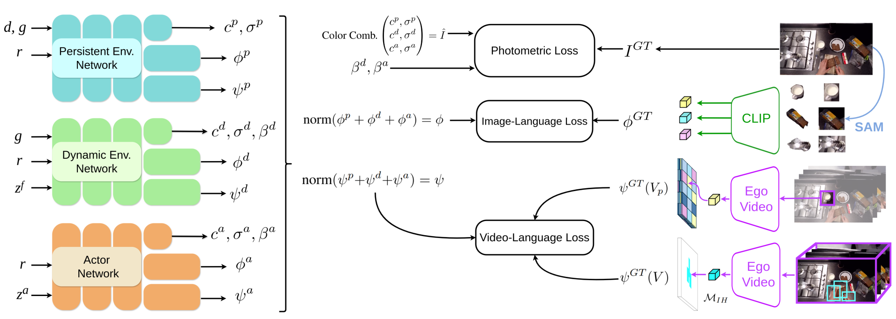

Dynamic Image-Video Feature Fields
For Environment Understanding in Egocentric Videos
✨✨ Accepted at CVPR 2025 ✨✨
Visualize our results!
Click the button to change the scene. DIV-FF renders objects and affordances in egocentric videos.
Abstract
Environment understanding in egocentric videos is an important step for applications like robotics, augmented reality and assistive technologies. These videos are characterized
by dynamic interactions and a strong dependence on the wearer engagement with the environment. Traditional approaches often focus on isolated clips or fail to integrate rich semantic
and geometric information, limiting scene comprehension. We introduce Dynamic Image-Video Feature Fields (DIV-FF), a framework that decomposes the egocentric scene into persistent,
dynamic, and actor-based components while integrating both image and video-language features. Our model enables detailed segmentation, captures affordances, understands the surroundings
and maintains consistent understanding over time. DIV-FF outperforms state-of-the-art methods, particularly in dynamically evolving scenarios, demonstrating its potential to advance
long-term, spatio-temporal scene understanding.
Overview of DIV-FF. Our three-stream architecture field predicts the color \( c \), the density \( \sigma \), the material aleatoric uncertainty \( \beta \),
the image-language features \( \phi \) and the video-language features \( \psi \) along a ray \( r \) with direction \( d \) given the camera viewpoint \( g \) and a frame
specific code \( z \). We first extract SAM masks and bounding boxes from the image, that we leverage to obtain a unique CLIP descriptor \( \psi (I^{GT}) \)
in all the pixels within the respective mask. We supervise the video-language feature field with local patch features and a global
video embedding assigned only to pixels in the interaction hotspot, computed with a pre-trained hand-object detector.

Affordance Segmentation
DIV-FF distills Ego-Video features for enabling affordance segmentation in egocentric videos.
While image-language features (CLIP) perform well when actions are explicitly linked to objects, such as
“cut the onion” or “add ingredients to the mixture”, our distilled video-language features accurately identifies the action's interaction hotspot.
Dynamic Object Segmentation
DIV-FF also shows consistent Dynamic Object Segmentation along different time-steps in novel views: The dynamic and actor streams contain
respective frame-specific codes \( z^f_t \) and \( z^a_t \). This time encoding is also propagated to the semantic feature field, obtaining consistent segmentations despite the continuous movement of the “spatula” and “blue cutting board”